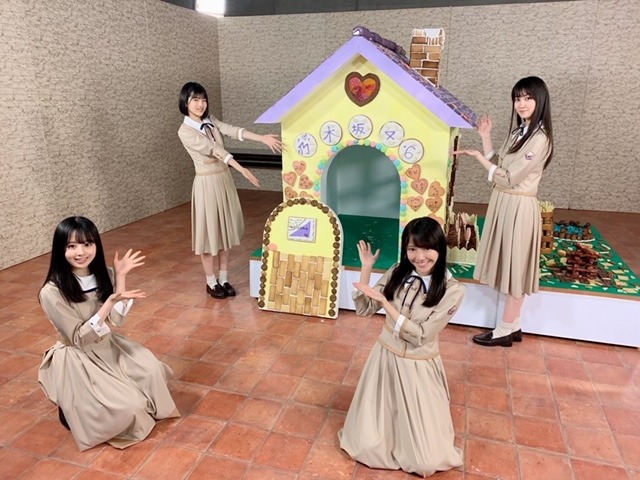

2020/0630Tue多く笑っている！弓木奈於


2020/0629Monうさこあら 松尾美佑
小学校の時、雨の日の窓ガラスに絵を描くのが好きでした¨̮
おぉ！ となるような上手な絵が描ける訳では無いので、
いつも窓ガラスに描いていたのは
とりあえず点を2つと、にーっと線を引いて
顔の出来上がりです¨̮
気が向いたらそれに耳を付けてみたり。
千葉県出身、高校2年16歳の
松尾美佑(まつおみゆ)です。
よろしくお願いします¨̮

今日は うさこあらさん についてちょこっと。
46時間TVでデザインさせて頂いたマフラータオルにも、
そしてサインにも、
うさこあらがいます。

うさこあらさん
右上で紫と白の風船を持ちながら手を振ってくれている方です。
私もお揃いにしようと思って紫と白の風船をブースに飾っていました☺︎
ある日私は 100%のウサギを描きました。
友達に コアラ？ と言われました。
なので うさこあら です。
単純ですね
ᐠ( ᐛ )ᐟ
でも今見てもこの子は100%ウサギです。
これからもうさこあらさんと共に頑張ります
いつも穏やかな表情で親しみやすいお顔なので、是非お友達になってください
うさこあらさん編〜完〜
お返事します。
✽今回の個別マフラータオルのデザインどんな意味を込めてるのかとかもしあったら教えて欲しいな！
こだわりは
紫と白とグレーの幾何学模様？(って言うのかな？)の所は大きく MIYU になっています！
あとは うさこあらさん が上からこんにちはしている所です¨̮
かっこよさと可愛さをいれたくて何通りも考えてあのデザインに決めました！
✽まるちゃんの好きな食べ物はなに？
食いしん坊なので基本何でも尻尾をフリフリしながら食べています。
何を1番 美味しい！ と思っているのか気になるね〜と父と話していました。
今朝はすいかをちょこっと食べてました^^
✽今朝もキウイ食べましたよ
ミュウちゃんはキウイ食べたかな？
食べました！
すいかとパイナップルとさくらんぼも食べました！
✽美佑ちゃんの好きな女の子の髪型知りたい！
ショートの子が片方耳掛けする仕草が大好きで、ショートの子可愛いなぁ〜！って思います。
あとは、ミディアム〜ロングでゆるっと巻いている方もすっごい可愛いです。
ベリショが似合う方も本当に綺麗でかっこよくて好きです。
全部好きです。
✽好きな方言は何ですか？（因みに私は大阪弁喋ってます〜）
ぱるの不意に出る鳥取弁のファンです。
だがんなー って。
方言に憧れます！
大阪弁も好きです☺︎
✽私の声は届いてるかなぁ〜(*´ー｀*)
届いてる〜(*ˊᵕˋ*)
明日は〜
| ᐕ)⁾⁾
なお〜〜〜〜〜〜〜〜〜〜〜〜
ミュウでした¨̮
5日後までばいばいっ

2020/0628Sunお疲れ様です！林瑠奈ですよ〜
本日もお疲れ様です。
乃木坂46新4期生の林瑠奈です。
神奈川県出身高校2年生16歳
華咲くシックスティーンの林瑠奈です。
負けるなしょげるな林瑠奈、今日も1日頑張るな
(ピンポーン)
Q なおの関西弁とるなぴの関西弁とではちょっと雰囲気が違うね。
Qスマホの中に入ってるチェキは璃果ちゃんかな？
Q (iPhoneから送信2連続は確信犯やな)
A 何度か書き直してコピペしたのでミスです。今回はしっかりと確認して消しました。
Q トークは弓木ちゃんがまわしてたけど、林瑠奈ちゃん立ち位置が真ん中だったからずっと映ってたよね。めっちゃ目立ってましたよ。
A 46時間テレビでの1番の反省です。もっと上手くみんなに回すことができていればと今更ながらに思っています。
3日目の朝になおが、『今日は何の日だっけ？？』とわたしに振ってくれたのですが、全く見当もつかなかったわたしは、「え、なんかあったっけ」と完全に素のテンションで答えてしまってましたね。
父の日だなんて知りませんでした。こちらも反省です。
ということで今日お話しするのは、本当は母の日付近で書こうと思っていた
『Q お母さんはどんな人ですか？』についてです。
例年であれば、母の日には何かしらの贈り物をするのですが、今年は思うように外出できる状況ではなかったので自粛した母の日。
わたくしの母一言で、尚且つ第三者目線で言いますと、林瑠奈の分身と思ってもらって構わないです。
笑いのツボ、怒りの沸点、テンションの上がるポイント...... こちらの3つに関してはほとんど一緒と言えます。
しかし、わたしと違うところもありまして、それはコミュ力の高さや人望など、
『生きていく上であった方がいいよねコレ』というものがわたしよりも長けています。
わたしにとって母親とは、母であり、親友であり、父であり、1番自分を理解している存在であり......etc
世間で言う『16歳の娘と母親』よりは距離が近く、よくここまで仲良くやってこれたなぁと自分ごとながらに感心です。
最近アンケートに書いた、
『これがなかったら生きていけないというものは？』
『無人島にひとつだけ持っていくとしたら？』
はどちらも『お母さん』です。
形にすることだけが感謝ではないです。
むしろ、形にならないものの方が想いを運んでくれることもあるのです。
感謝大事感謝大事感謝大事感謝大事感謝大事感謝！！
みなさんもお母さん大切にしましょうね。
...........................................................................
次回予告
【お待たせ致しました！寄ってらっしゃい
みてらっしゃい！！ みんな大好き黒見回〜！！】
です。お楽しみに。
さて明日はミュウちゃんです。
みゆちゃんモノマネのレパートリー増やしとくね。

みんなが大好きや〜
今度16人で写真撮りたいな。
ふと、わたしの中で愛が動いた。
星が綺麗ですね。
アディオス！！！
2020/0627Satやさしさ。佐藤璃果
こんにちは~☺︎
6月27日(土)
お元気ですか？
乃木坂46 新4期生 岩手県出身
佐藤璃果です。

紫陽花！！！♡
6月は紫陽花という感じがしますよね。
なぜでしょう。
"紫陽花は雨に濡れている方が美しいんだよ"
そういう話をしてもらって、なるほどな
と思った私です。
雨に濡れていることで、
花びらが反射でキラキラ光り
輝いているように見える。
色に深みがでるな、と思いました。
調べてみて、紫陽花には色ごとに、
花言葉があることがわかりました。
白い紫陽花:『寛容』
青い紫陽花: 『辛抱強い愛情』『強い愛情』
ピンクの紫陽花:『元気な女性』
らしいです。
とてもシュールな画像たち。
雨の季節。(´._.`)
*****************************************

たまたま居た4人で撮りました。
いつか16人で写真を撮れる日が来るといいな。
新4期のなかで居ないのなおちゃんだけだ...
申し訳ない。また今度、撮ろうね！
なおちゃんに申し訳ないので
エピソードトークをしたいと思います！
なおちゃんは話を聞く時に
「分かるぅ~」
と言っている時の瞬き長めのことが多いです。
人の話をよく聞いているというのが
伝わってきます。素敵です。
せつめいむずかしい。
前回の続きを！
3日目の朝。新4期生の5人での30分間を、
2日目に続き頂きました。
昨日の反省を活かして、
もっと周りを見るようにして、
話す事だけが全てじゃないので、
気をつけました。
ダミヘ、ドキドキでした(ㆆ_ㆆ)
みんなのを、聞いて胸が
ドックンバックンしました。
ヘッドフォンの音質も良すぎて余計に。
みんないい声してるなぁ、
*****************************************
そして最後に、
ライブがありました！
最初の裸足でSummer、
自分のタオルを掲げて、歌うのは新鮮でした。
ライブビューイングで行った
乃木坂46 7th YEAR BIRTHDAY LIVE
の時は、西野七瀬さんのタオルを掲げて、
コールしていましたので。
そして、ユニットに別れての
先輩方のライブ。素敵でした。
一人一人がキラキラと輝いていて、
熱量が凄くて、
初めて披露される曲、
大好きな曲が沢山ありました。
「Sing Out」と「世界中の隣人よ」に
私達も参加させて頂きました。
ありがとうございます。
初めて乃木坂46の1人として
参加出来た日なので
忘れることはないです。
*****************************************
ちょっと裏話。
「のぎおび」でも大園桃子さんが
言ってらっしゃったように、
ライブで失敗してしまってずっと心苦しくて
全員に謝りたかったんですけど、
いい空気を壊すのもなということで、
マネージャーさんにだけ謝りに行ったら、
3期生の皆さんのところに連れて行ってくださって、
先輩方が温かい言葉をくれたんです。
本当にありがとうございました。
家に帰ってからも、心苦しかったところに、
大好きな、とある先輩からご連絡を頂き、
また助けて頂きました。
泣かないようにしてきたので、
本当にお恥ずかしいです...
皆さんから頂いた優しさを、
忘れずに私も優しさを伝染して行けるように
心に留めておきたいと思います。
3期生の先輩方、
ありがとうございました！
*****************************************

(あまり上手く切り分けられなかったので、
キラキラさせてみた。)
そして、ギリギリになってしまいましたが、
6月生まれの皆さん、
お誕生日おめでとうございます。
素敵な一年になりますように。
今回はオレオチーズケーキです。
ずっと作ってみたかったのですʕ๑•ɷ•๑ʔ
我が家には電動泡立て器がないので、
手動で泡立てるのが難点でしたね、
いつも電動泡立て器を買おうとするのですが
悩んで悩んで諦めます。
あっホットサンドメーカーも頼もうとして、
諦めてた( ´ ꒳ ` )
*****************************************
沢山の心温まるメッセージ、
ありがとうございます。
皆さんの忙しい日々の中で、
私にコメントを書いてくれたり、
読んでくださったり、
しているのをよく想像します。
言葉には大きな力がある。
何度も思ってきました、
いつもありがとうございます。
沢山の優しさをありがとうございます。
感謝の想いって伝わってますか？
文字に想いを込めて、届けっ！えーいっ！
次の回で質問コーナー再びしたい
と思います。
どきどき。
待ってます。
*****************************************
明日はるなぴです。
るなちゃんにブースに沢山あった
白目マークの書き方のコツを今度教えて欲しいな( ˊ꒳ˋ ) ᐝ
*****************************************
皆さんにとって今日が
素敵な一日になりますように。

このTシャツお気に入りです☺︎
それではまた~
#13 ❁ り か ❁
2020/0626Fri"あなたのハートに全力ズッキュン♡" 黒見明香
ココを見つけてくださり ありがとうございます♪
乃木坂46 新４期生の黒見明香です。
すこーしだけ自己紹介させてくださいませ☺︎
♪:*:･･:*:･･:*:･･:*:･･:*:･･:*:･♪:*:･･:*:･･:*:･･:*:･･:*:･･:*:･♪
黒見 明香（くろみ はるか）
2004年1月19日生まれ 16才
香港生まれ・東京都出身です
あだ名： くろみん・黒見ちゃん
3の倍数9・6・3(くろみ)
と覚えてもらえたら嬉しいです♪
★コメントより
Q. 46時間TVのお菓子の家はどの部分を作っていましたか？
A. "お菓子作り担当"だったので....
せっせと『クッキー』をいっぱい作っていました✩︎⡱
16人がチョコペンで手描きした ハート型♡のクッキーや
屋根の上にひらひらと乗っている、ピンクの桜の花びらも
生地をめん棒で2mmに伸ばして、可愛く型抜きして、
オーブンで焼いて、いっぱい作りましたー‼︎
＊
他担当だった矢久保美緒ちゃん♡も
すごーーく良い香りがして・・・
つまみ食いを我慢するのが大変でした笑
♪:*:･･:*:･･:*:･･:*:･･:*:･･:*:･♪:*:･･:*:･･:*:･･:*:･･:*:･･:*:･♪

-:-:୨୧:-:- たくさんリクエスト下さった「ウインク♡」に挑戦！・・・あれれ？
⚫︎ウインクできますか？できるならぜひ自撮りのせてください！
『全力ウインク』の練習をしてみました・・・汗
運動神経悪いからでしょうか・・・ウインクのつもりが、
ほぼ目をつむっている模様です...Σ（ﾟдﾟll）
＊
練習して、できるようになったら・・・
またリベンジさせてくださいね！

松村沙友理さん♡が考案してくださった、端午節「たまごのポーズ」です♪
憧れのステキなお二人とご一緒させて頂き、幸せすぎる時間でした✩︎⡱
【 乃木坂46オフィシャルWeibo300万人直前特別生配信✨ 】
昨晩、見てくださった方もいらっしゃるかなー？
松村沙友理さん♡鈴木絢音さん♡と共に、
ありがたくも生配信に参加させて頂きました♪
＊
初めてのことで前の晩からずっとドキドキしていて、
不安も大きく、とても緊張していたのですが、
松村さんが 可愛く楽しく リードして下さり、
優しい鈴木絢音さんが 進行を支えフォローして下さり、
大好きなお二人がそばに居て下さったことで、
初めてながら とても安心して
楽しく番組に参加させて頂くことが出来て
心から感謝しています(*´-`)✨
＊
46時間TVでも、憧れて見ていた
「テンション0・100対決！」や「ベストアクト」
松村さん、鈴木さんに圧倒されました！！
カッコ良く、そして最高に面白かったです✨
わたしも皆さんに楽しんでいただけるよう、
恥ずかしがらずにお家でコッソリ
（皆さんもよかったらコッソリ....
テンション0・100やってみてくださいねヾ(･ω･*)笑）
♬ *。♩*。♬
松村さんは、司会でとってもお忙しいにも関わらず、
念願の ＃マツミンクロミン トークにも付き合って下さり、
本当に嬉しかったです((〃ω〃))
「黒かなぁ〜？」「でも黒いないんだよねー笑」と
わたしのマヌケな話にもノッテ下さり、
さりげない優しさが眩しすぎる✨憧れの先輩です。
＊
鈴木さんには「デビュー直後にこのような期間を迎えて、
いろいろと制限されちゃったり、
悩んだ事も多かったかもしれないけれど。。。
これが新４期のみんなの"良い糧" になるかもしれないね✨」
とお話しして下さり、アドバイス下さり、
＊
緊張して言葉が飛んでしまったりと,,,
生配信では個人的に反省も多かったですが。。。
これからも、いろいろなファンの方の
お気持ちが聞けるように、少しでもお話できるように...
コツコツ勉強を続けて行きたいなぁと思いました☺︎
♬ *。♩*。♬
非常感谢大家收看直播并支持我们！
这是我第一次参加这样的直播活动，感到十分紧张，还有一些小失误。但能够与大家互动感到非常有趣和高兴。 谢谢大家的评论和支持。
我会继续努力的！请大家今后也要多多支持乃木坂46！
生放送をご覧いただき、ありがとうございます。
こんな生放送イベントに参加するのは初めてで、とても緊張し、失敗しちゃったところもありました。 でも、皆さんとこウヤって交流することが出来て面白く、とても楽しかったです♪コメントと応援も本当にありがとうございました。
これからも頑張ります。乃木坂46の応援どうぞよろしくお願いします✩︎⡱
♪:*:･･:*:･･:*:･･:*:･･:*:･･:*:･♪:*:･･:*:･･:*:･･:*:･･:*:･･:*:･♪

-:-:୨୧:-:-マネージャーさんが撮って下さったオフショット♪
【 B.L.T.8月号「乃木坂ツーリスト」特別編 】
３期生の先輩方から始まって、
４期生のみんなが引き継いできたステキな企画、
「乃木坂ツーリスト」
ありがたくも掲載して頂きましたー！
＊
一人で取材や撮影して頂くのは 初めてのことで
「・・・わたしで大丈夫かなぁ。。。>_<」と
ドキドキしていましたが,,,
恒例のサイコロを使ったスゴロク企画では、
ガチの！！ゲーム体験をし、
（大好きすぎるからか？憧れの秋元真夏さん♡の
心から楽しい、笑顔の撮影となりました(๑˃̵ᴗ˂̵)✨
＊
皆さまにプレゼントさせて頂くチェキ♡には、
前の晩に何度も練習して臨んだのですが、
書くペン先が震えて、字がぷるぷるしてしまい・・・
そんな初めて記念のチェキになりました(*´-`)
３種類の衣装×２枚づつ載っているので、
よかったらぜひGETしてくださいね☺︎✨
＊
わたしの知らない自分・・・
『少し背伸びした16才』 を
撮影してくださいました✩︎⡱
是非お手にとってみて貰えたら嬉しいな☺︎♪
♪:*:･･:*:･･:*:･･:*:･･:*:･･:*:･♪:*:･･:*:･･:*:･･:*:･･:*:･･:*:･♪

ーフィナーレの「世界中の隣人よ」で映して頂いたメッセージボードです(*´-`)
【 乃木坂46時間TV 舞台裏のおはなし✨ 】
"ハッピーなハニワ(埴輪)"みたいと笑われていしまいました(*´-`)笑
（46時間TVの舞台裏で、璃果ちゃんが遠くから撮ってくれました。）
瑠奈ちゃんも喜びを綴っていたように、
大好きなくすみブルーのドレスのクリアファイルに
後輩メンバーに未央奈さんセレクトの
みんなで感激していました✩︎⡱
１つ目は研修生メンバーから頂いた誕生日プレゼント
２つ目はB.L.T.様の「乃木坂ツーリスト」すごろくで当たったもの
３つ目は46時間TVの時に堀未央奈さん♡から頂いたステキな私物です。
② 大人のアロマな香り
③ 心華やぐエレガントな香り
がして、幸せになります((〃ω〃))✨（963調べ）
（＊書いて頂いたサイン&メッセージは
こんな一日だったよといつも報告して下さる方も、
大切な時間を使ってお話しして下さり
本当にありがとうございます✨
大事に、一つずつ全部読ませて頂いています((〃ω〃))
皆さんのことを知ることが出来る、
私の１日の中で１番幸せな時間です♩
直接お話しできる時が、 待ち遠しいです✩︎⡱
と願っています(*´-`)
初めて会える日を、楽しみに待っています♪
＊
明日は、さっそくB.L.T.を読んで感想を送ってくれた
優しすぎる大好きな璃果ちゃんですよー！
読んでくださり、本当にありがとうございます☺︎
次回も、会えたら嬉しいなぁ✨
またねヾ(･ω･*)
くろみはるか☺︎
☆ 本日のあなたのラッキーナンバー：２ と ８
♪:*:･･:*:･･:*:･･:*:･･:*:･･:*:･♪:*:･･:*:･･:*:･･:*:･･:*:･･:*:･♪
お仕事やテストが大変な方、体調くずされちゃった方・・・
暑い日が続くけれど、水分いっぱい摂って、
どうぞ皆んなが元気でいられますように・・✩︎⡱
少しでも良くなりますように・・・>_<